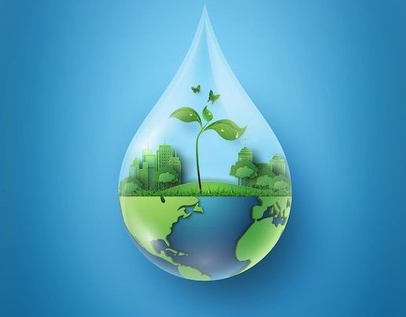

Water is life — te wai ko te ora. Here, you’ll discover how small actions can lead to big changes, all guided by the powerful Māori principle of Kaitiakitanga — the deep responsibility of guardianship and care for the natural world.
Welcome to our Water Conservation Site!
Explore how you can make a difference by embracing the values of Kaitiakitanga. This Māori concept reminds us that we are caretakers of nature, not owners — entrusted to protect water as a sacred taonga (treasure) for future generations.
Through small, meaningful actions, you can become part of a movement that blends ancient wisdom with modern sustainability. Let’s honour our waters, restore our rivers, and make every drop count.
Kaitiakitanga teaches us that we are not owners of the land and water, but stewards, entrusted to protect these sacred resources for future generations. It’s about respect, balance, and connection — with nature, with community, and with whakapapa (our lineage and future descendants).
